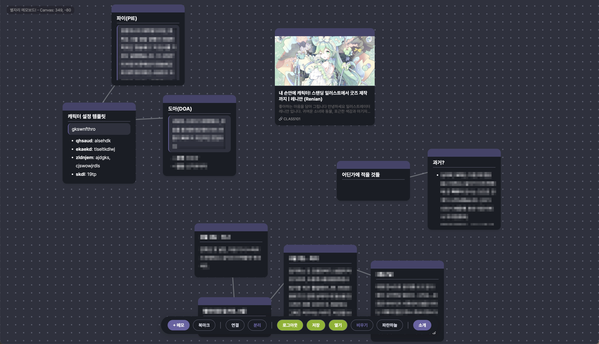

별자리 메모보드!

별과 별들을 잇는 **별자리**처럼, 나의 생각을 이어주는 메모보드.
별자리 메모보드는 아직 시험 단계이며, 서버 없이 브라우저 상에서만 동작합니다.
기능
- 무한한 캔버스: 넓은 캔버스에 여러분의 상상력을 자유롭게 펼쳐보세요.
- 메모: 일반 노트입니다. 마크다운 문법을 사용할 수 있습니다.
- 북마크: 온라인 상의 어떤 페이지든 북마크할 수 있습니다. 일반 메모상자보다 조금 크게 표시됩니다.
- 자유로운 연결/해제: 캔버스 상의 메모와 북마크들을 제약 없이 연결할 수 있습니다.
- 로컬스토리지 저장: 캔버스의 데이터는 서버 없이 브라우저에 안전하게 저장됩니다. 만약 브라우저에서 로컬스토리지 데이터를 삭제하면 데이터가 휘발될 수 있습니다. 그러니 저장 기능을 꼭 사용해주세요.
- 열기/저장: 만들어진 캔버스를 로컬에 저장하고 불러올 수 있습니다.
- 테마: 다크/라이트 모드 중에서 선택하실 수 있습니다.
- 미스키 로그인: 연합우주 인스턴스 중에서도 미스키에 계정을 가지고 계신 분들의 경우, 미스키 드라이브를 이용한 기기 간 연동이 가능합니다. 완전히 동기화는 아니고, 새로운 기기로 옮겨가기 전 내용을 저장해야 하며, 새로운 기기에서 접속할 때마다 내용을 불러와야 합니다. 일단 미스키에 로그인하면 열기/저장 과정이 미스키 드라이브에서 수행됩니다.